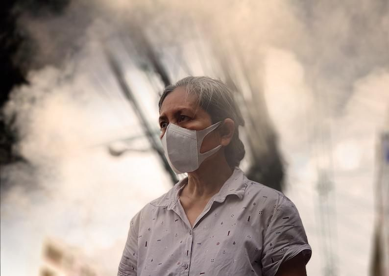
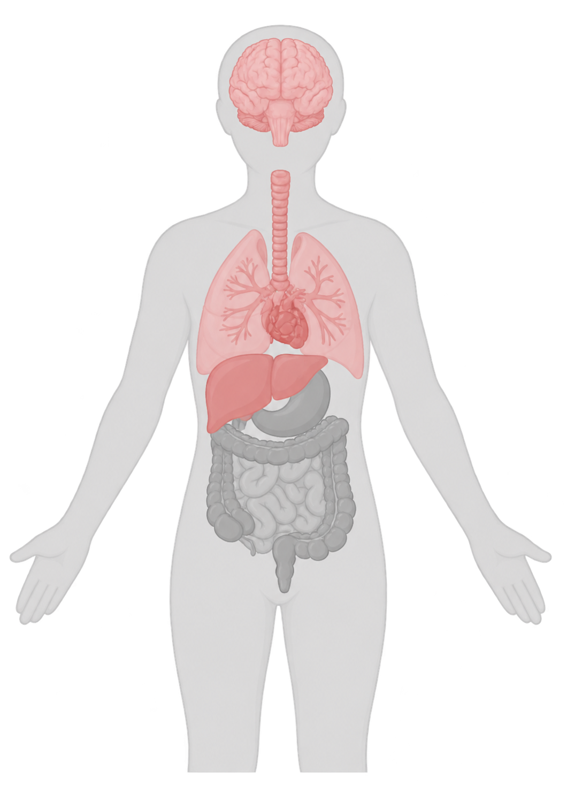
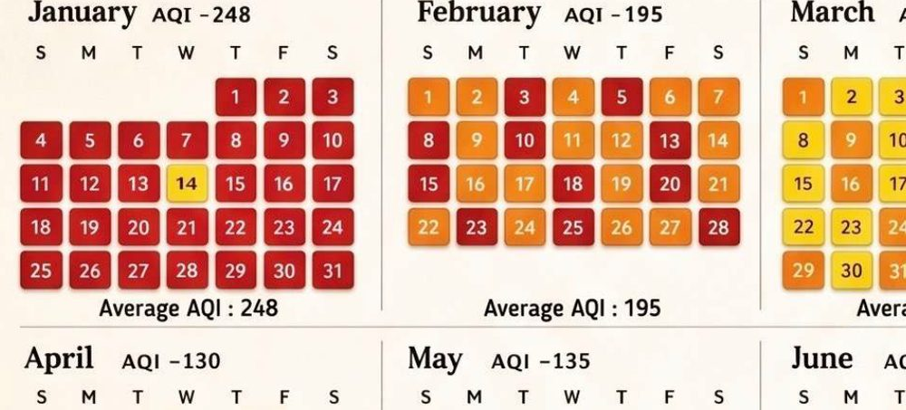
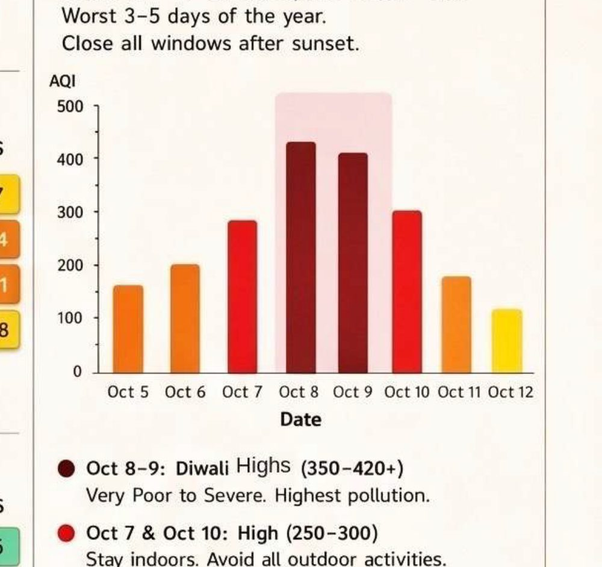
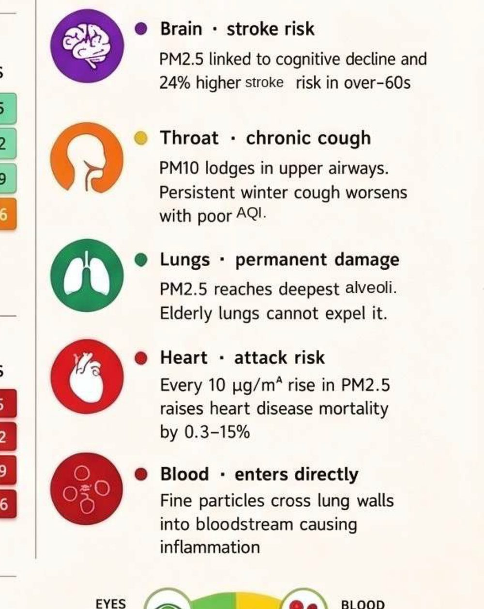

The question
How can air-quality information become easier for elderly people to use?

An accessible AQI calendar helping elderly people understand pollution and make safer daily choices.
How can air-quality information become easier for elderly people to use?
Translate daily pollution data into an accessible visual calendar.
365 days of AQI information designed to support everyday decisions.
For elderly people in Ahmedabad, air pollution isn't a number — it's coughing, fatigue, and breathlessness. This project translates AQI into a familiar wall-calendar, using colour and body-based cues instead of apps or dashboards.
It turns AQI into a slow, everyday reminder that links pollution to symptoms and safer daily choices.
Fine particles can reach deep into the lungs. Older adults, especially those with existing heart or lung conditions, are more vulnerable.

Fine particles can worsen breathing difficulties and existing lung disease.
Select a body part to explore its effects.
Health evidence: EPA · Stroke risk · Liver study. Associations describe risks, not an individual diagnosis.
Choose a stakeholder to understand their position. Zoom in and drag to explore, or use the arrow keys after focusing the map.
High interest, lower power. Their everyday exposure makes them the primary audience, but they have limited control over city-wide pollution.
Relative positions follow the project’s stakeholder matrix; they are qualitative, not numerical measurements.
CPCB AQI Data
Five years of CPCB AQI data for Ahmedabad revealed seasonal patterns and year-to-year shifts.
WHO Health Reference
WHO guidelines helped translate AQI numbers into body-level health cues for vulnerable, older bodies.
Growth-Based 2026 Projection
A simple growth-based projection estimates 2026 AQI from past trends.
AQIavg = average AQI from 2021–2025
% growth = ((AQI2025 − AQI2021) / AQI2021) × 100
Yearly growth = % growth / 4
AQI2026 = AQI2025 × (1 + yearly growth / 100)
This projection is used as a design estimation method, not as a scientific forecast.
The slide series gives 130 for 2021 and 210 for 2025. Total change is 61.54%; dividing this by four gives 15.38% per year. Applying that rate to 210 gives approximately 242 for 2026.
The five-year average is 175. It is descriptive context, rather than an input to the final formula. Percentage growth is divided by 100 before multiplying.
This is the project's simple design estimate, not an observed value or a validated forecast.
To move air pollution from an invisible background condition to a daily, body-level reality.
To help elderly users decide when to walk, when to shut windows, when to avoid outdoor activity, and what symptoms to discuss with doctors.
To make AQI understandable without depending on apps, dashboards, or high data literacy.
A wall calendar puts the information in an existing daily routine, without requiring a smartphone, login or internet connection.
of older respondents had smartphones. App-based information would miss many people in this sample.
used the internet. A printed format can be read without going online.
found digital tools confusing. A familiar calendar reduces the need to learn a new interface.
Evidence: HelpAge India, 2025 · pp. 77–79. Urban survey across 10 Indian cities; these are survey findings, not estimates for every older Indian. The calendar is our design response to these barriers.
A physical wall calendar that turns AQI from numbers into a daily body-health guide. Each day's colour, plus pollutant and health cues, links pollution to real symptoms and safety actions.
It works as both an information object and a daily reminder — bringing environmental data into the home in a familiar, low-tech format.
Each date = one day of AQI data
Colour = air quality risk level
Clusters of dark days = repeated exposure
The design explores cues for everyday questions about:
Different weather, different exposure. Three seasonal patterns that shaped the calendar.
Temperature inversions can trap polluted air near the ground, allowing particulate matter to accumulate.
Dry conditions lift dust into the air; heat and sunlight support ground-level ozone formation.
Rain washes some particles from the air, often improving conditions compared with dry periods.
Images and seasonal framing from the project presentation. These are seasonal tendencies; local air quality varies throughout the year.



